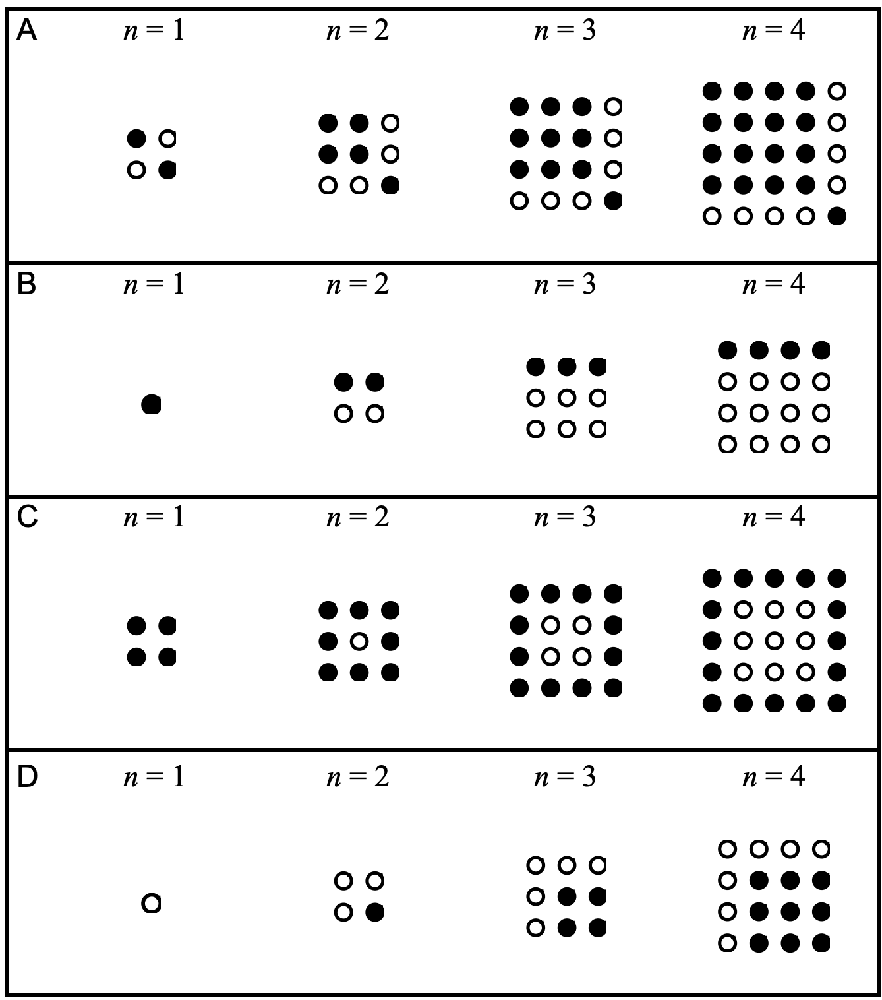
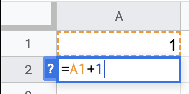

Functions
Contents
Functions#

Definition
In mathematics, a function is a binary relation between two sets that associates every element of the first set to exactly one element of the second set. Typical examples are functions from integers to integers, or from the real numbers to real numbers.
Starting with Sequences#
In mathematics, a sequence is an enumerated collection of objects in which repetitions are allowed and order matters. Like a set, it contains members (also called elements, or terms). The number of elements (possibly infinite) is called the length of the sequence. Unlike a set, the same elements can appear multiple times at different positions in a sequence, and unlike a set, the order does matter. Formally, a sequence can be defined as a function from natural numbers (the positions of elements in the sequence) to the elements at each position.
Examples of Sequences#
Below, sequences are displayed visually.
Determine an expression for the number of white dots
Determine an expression for the number of black dots
Determine an expression for the number of total dots
Use your expression to determine how many white, black and total dots there would be in the 20th term of the sequence

Problems#
Visualizing with Google Sheets#
Now, we will use google sheets do define and visualize the first ten terms of our four sequence. To do so, we will define our functions in two ways. The first method for defining function is a recursive definition. This explains how to get from a previous term in a sequence \(a_n\) to the next term \(a_{n+1}\).
Let’s start with the first sequence:
The key here is determining a way to generalize the \(5, 7, 9\) in terms of the index value \(n\). Let’s try to figure out this expression and use it to define the sequence in sheets here.
STEP 1: Define the index
Set the first cell as 1. Set the second cell below as equal to the previous cell plus one.

Step 2: Apply to 10 Cells
Drag the values through the first ten rows of the data using the small blue square in the corner of the second cell.
Step 3: Define Sequence
Define the first term of the sequence in the second column. In the second cell, define your rule based on the previous term and index value.
Problem#
Use google sheets to plot sequences A - D above.
Closed Form definition#
An alternative approach to defining the sequences is to determine a rule in general where given the index value the function returns the term of the sequence. For example, sequence A can be defined as:
Use closed form definitions to define sequences E-H from above on the second sheet named closed.
Summary#
Today we examined tools for representing patterns of numbers using both recursive and closed form functions. We used numbers, tables, and graphs to examine these. Next class, we will dive deeper into sequences and functions and begin plotting and defining them using the Python computer language.
\(a_n = [1, 3, 5, 7, 9]\)
\(a_n = [0, 3, 8, 15, 24]\)